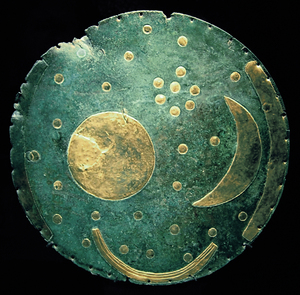

ϭⲓⲙⲟⲩⲧ B v ϭⲓⲛⲙⲟⲩⲧ.
(noun female)
the Pleiades [Πλειας]

1: the Pleiades
complete
818b
821a
824a
ϭ(ⲓ)ⲙϩⲟⲩⲧ v ϭⲓⲛⲙⲟⲩⲧ.
821a
ϭⲓⲛⲙⲟⲩⲧ1, ϭⲓⲙ.2, ϭⲓⲛⲙⲟⲧ3, ⲕⲛⲙⲟⲩⲧ4, ϭⲙⲙ.5, ϭⲓⲛϩⲟⲩⲧ6, ϭⲓⲙ.7, ϭⲙ.8, ϭⲉⲙ.9 S, ϭⲓⲙⲟⲩⲧ B nn f, the Pleiades (cf ? knm.tj Berl Wörterb 5 133 HT): Job 9 9 ⲧϭ.1 B no art, ib 38 31 ⲧϭ.2 (var1) B do Πλειάς; P 44 52 ⲧϭ.1 · ⲉⲝⲁⲥⲧⲣⲟⲛ ثريّا (cf K 51 ⲱⲣⲓⲁⲥ · ⲉⲝ. ﺛ׳), P 43 131 ⲧⲉⲡⲣⲁⲝⲓⲥ (ⲛ)ⲧϭ.1 اعمال ﺍﻟﺜ׳ (from كتاب ديوناسيوس sc Dionysius Areop.); PS 349 ⲡⲁⲣⲭⲱⲛ ⲉⲧϩⲓϫⲛϭ.5, BKU 1 7 ⲧϭ.3 in midst of heaven, ib 22 sim ⲧⲕ.4, L Cyp 3 ⲧϭ.7 (var Mor 18 1099), Mor 41 152 ⲡϣⲱⲡϣ ⲙⲛⲧϭ.8, P 1322 47 morning star & ⲧϭ.6, Mor 46 32 wizard ⲁϥⲁⲗⲉ ⲉⲧϭ.1, Orat Cyp 25 Sf sim8. No proof that 1–5 are equivalent to 6–9.
824a
ϭⲓⲛϩⲟⲩⲧ v ϭⲓⲛⲙⲟⲩⲧ.